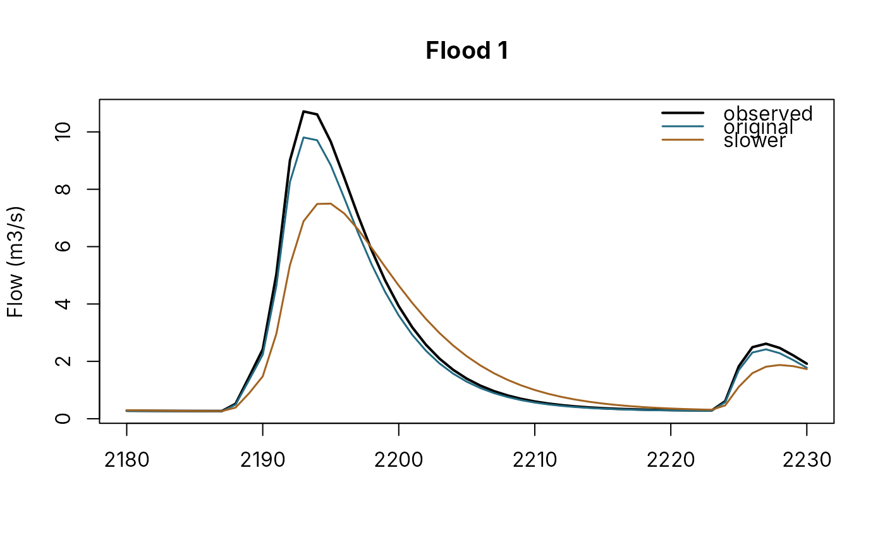

Runs two or more calibrated PDMs on the same forcing, from the same start rule, and sets them side by side: their parameters, their scores in each window, their threshold scores and their errors on the largest floods. Use it to compare a model calibrated in PDM for PCs with one calibrated here, two candidates of one project, or a model before and after a change.
Arguments
- models
Named list of models (see above); at least two.
- forcing
Data frame with
rainandpet(mm per step), and optionallytimeandabstraction(used only by models with the groundwater extension).- observed
Observed flow, m3/s, aligned with
forcing.- windows
Named list of scoring windows, each
c(first, last)as rows or as times whenforcinghas atimecolumn; by default the whole record after the warm-up.- warmup
Rows at the start that are never scored.
- start, baseflow_fraction, soil_fraction
How every model starts; see
calibrate_pdm().- n_events
Number of largest observed floods compared, from
find_events().- markers
Flow markers of
flow_markers()the models are scored against as thresholds, worked out from the observed flow in the windows;NULLfor none.- dt
Time step, hours, when
forcinghas notimecolumn.- x
A
pdm_comparison.- event
Which of the largest floods to plot, 1 for the largest.
- window
Instead, a window to plot, by name.
- ...
Unused.
Value
A pdm_comparison: parameters (one row per parameter, one column per model, and
differs), scores (one row per window and score), thresholds (per marker, window and
model), events (the largest floods, with each model's peak and timing errors), series
(observed and simulated flows) and models. Print it for a summary; plot it for the
hydrographs of one flood or window.
Details
Each model may be a configuration list, a FlodePdmModel, the path of a YAML configuration,
the path of a PDM for PCs *.inp file (read with read_pdm_inp() at the forcing's step), or
a calibration project folder (its candidate, from candidate_model()). Every model must have
the forcing's time step.
Every model starts the same way: from the first observed flow (start = "flow", see
initial_state_from_flow()) or from a soil fraction. Rows before warmup and outside the
windows are not scored. A model calibrated elsewhere was fitted to its own rainfall and
start; differences in the inputs show as differences in the scores, so give both models the
same catchment rainfall.
Examples
set.seed(1)
n <- 24 * 120
forcing <- data.frame(rain = ifelse(runif(n) < 0.06, rexp(n, 0.3), 0), pet = 0.08)
a <- pdm_presets("standard")
a$area_km2 <- 20
b <- a
b$surface$k1 <- 4
observed <- run_pdm(pdm_from_config(a), forcing)$output$q_m3s
cmp <- compare_calibrations(list(original = a, slower = b), forcing, observed, warmup = 240,
dt = 1, markers = "Q5")
cmp
#> Comparison of 2 models: original, slower
#>
#> Parameters that differ
#> parameter original slower
#> surface.k1 2 4
#>
#> Scores
#> window score original slower
#> record nse 0.94460 0.85290
#> record log_nse 0.03527 0.07142
#> record kge 0.79630 0.73050
#> record volume_error -0.19120 -0.19190
#> record peak_error -0.01861 -0.26310
#> record fdc_high -0.07258 -0.19470
#> record fdc_low -1.37900 -1.46200
#>
#> Thresholds (CSI)
#> window threshold original slower
#> record Q5 0.7857143 0.6
#>
#> Largest 10 floods: median |peak error| and |timing error| (h)
#> original 0.081 0.00
#> slower 0.265 1.00
plot(cmp)
